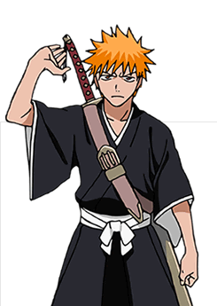
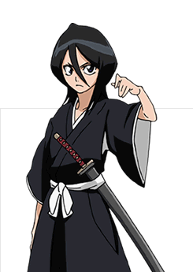
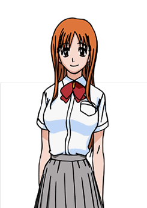
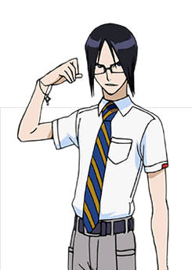
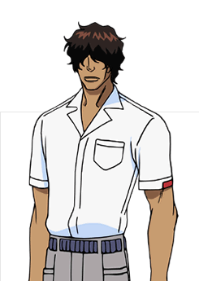
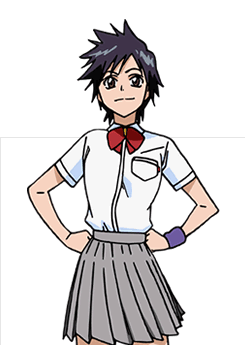

|  | The main character of Bleach is Kurosaki, Ichigo. The series is named after Ichigo’s trademark—and natural—‘Bleach’ blond hair. However, as a consequence of the outrageous coloring of his hair, he is constantly badgered by adults, who stereotype him as a punk, and other teenagers who think he’s copying their own bleached hair. Despite his appearance, Ichigo is very intelligent. In order to keep the teachers out of his hair, he spends almost all of his free time studying, since he doesn’t do any clubs. If nothing else, his high test scores bring looks of astonishment from friends and teachers alike. However, just like his appearance, Ichigo is one big, tough bad boy. In a fight, even with opponents outnumbering him 3 to 1, it is almost a guarantee that Ichigo will win. His finishing move the “Kurosaki Face Stomp” (a simple, but obviously powerful kick to the face) makes many appearances early on in the manga against your everyday thug. |
|  | Rukia is a shinigami from the Soul Society. She first appears in Ichigo’s room while chasing a hollow, but when things go wrong her powers get transferred to Ichigo. Without her abilities, she is unable to return to the Soul Society and is forced to inhabit a gigai, or temporary body. Rukia then attends Karakura High School as a member of Ichigo’s class. |
|  | Orihime is a student at Karakura High School in Ichigo’s class. She is a very heavy daydreamer, and this can sometimes make her seem a little flighty. Her best friend is Tatsuki, and she has a big crush on Ichigo. Her apartment number is 202, and she and her stuffed bear Enraku live there supported by relatives. |
|  | Ishida is a Quincy , a person who fights allows. However, unlike shinigami, Quincys kill hollows, not purify them. Because of this, the Quincy were destroyed by the shinigami 200 years before. This was done to keep the balance of souls correct and keep the world from being destroyed. Ishida’s sensei and grandfather taught him to love all creatures, but he died without any shinigami there to help him. As a result, Ishida hates all shinigami. |
|  | The kind, yet strong-and-silent type Sado Yasutora (commonly known as Chad) is a 15 year old student at Karakura High School, where his class rank is eleventh from the top. The only family that he is know to have had was his grandfather, who instilled great values into his young, impressionable mind. His abuelo, Oscar Joaquin de la Rosa, taught him that although his fists were big and his punches were forceful, he should never use them unless they were for the protection of another. Sado swore to himself and his grandfather that he would never hurt any living being on his own account. Aside from the promise that he made to his grandfather, Sado promised that if Ichigo put his life on the line for a cause, he would do the same. The bond between these two is fraternally strong and both would sacrifice their lives in the interest of the other. |
|  | Taking the form of a black cat, Yoruichi is said to be Urahara’s only relative. She first appears to tell Urahara that Renji and Byakuya have arrived, and they both seem to be expecting this. She trains Chad and Orihime and then enters the Soul Society with the group going to rescue Rukia. Yoruichi heals Ichigo after his fight with Kenpachi, and goes once again to his aid when he is fighting Byakuya. Byakuya reveals that Yoruichi had disappeared a few hundred years before and was presumed dead. He also explains that she is the ex-commander of special operations and ex-general of the keigun |